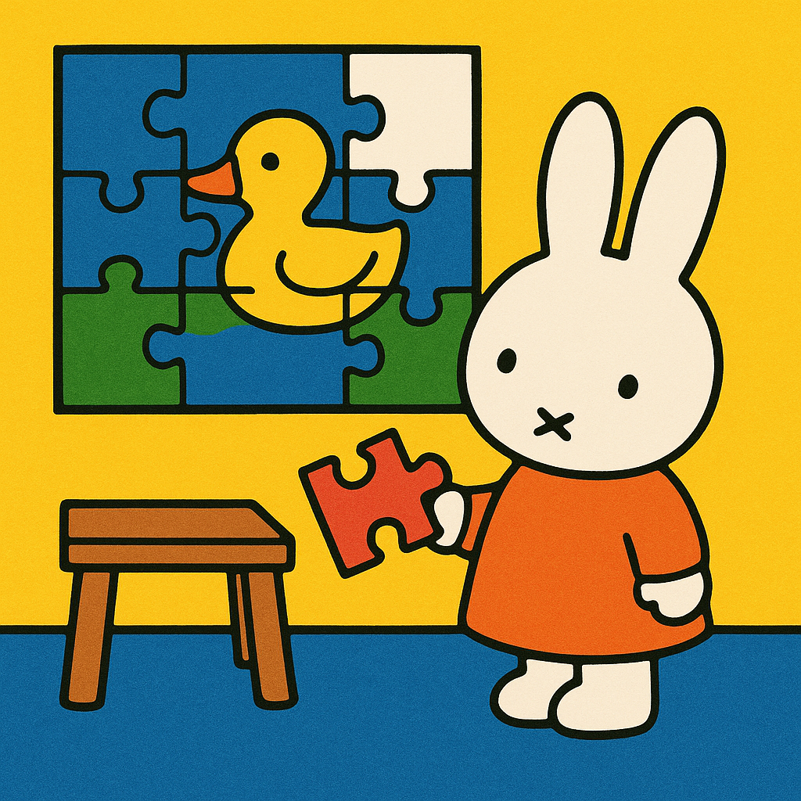

As discussed in class and in the book, These Strange New Minds, LLMs are truly powerful logical systems that have honed their abilities to solve logical puzzles, including those of lateral thinking puzzles. Lateral thinking puzzles are a genre of “word puzzles” that rely on outside-the-box thinking and rationalization to obtain context around a problem and answer the puzzle. I was curious in the LLM’s ability to accurately and swiftly deduce the answer. I decided to experiment the following lateral puzzle with gpt-4o and gemini 2.5 flash in the following prompt:
I have a lateral thinking puzzle for you. Try to solve it by asking one yes-or-no question at a time until you uncover the answer. Here’s the puzzle scenario:
A cabin is resting on the side of a mountain. It’s tightly sealed with all doors and windows locked from the inside. Strangely, everyone inside is dead, and they all met their demise at the same moment. There was no foul play—no murders, suicides, illnesses, or suffocation involved. Can you figure out how they died?
The trick behind this lateral thinking puzzle is that you need to think outside the box to find out that the “cabin” is not a cabin house as you would be led to believe because it is in the woods. It is actually an airplane cabin!
Now, let’s see how these LLMs do!
GPT-4o
GPT-4o was extremely efficient at answering the puzzle. It only took 3 questions for it to answer the puzzle. The three questions it asked included: > 1. Is the “cabin” a vehicle of some kind? > 2. Was the cabin an airplane? > 3. Did the airplane crash into the mountain, causing the deaths of everyone inside?
I asked the LLM after if it was familiar with the question, and it answered, “Yes, I’m familiar with this puzzle. It’s a classic lateral thinking puzzle that I’ve come across before.” Now, this leads me to believe that gpt-4o had already encountered this puzzle in its training data, so it was very well-equipped to answer this lateral thinking question.
I’m a little sad, as I felt that this didn’t feel like a full reflection of the LLM’s ability to reason and think through a problem, as it rather already had access to the solution. Nonetheless, it asked questions and arrived at a solution.
Gemini 2.5 Flash
Gemini 2.5 Flash took longer than I expected it to. While it seemed to make some headway quickly about the context of the problem, it had the assumption that the “cabin” was a stationary cabin in the mountain rather than a “cabin” in an aircraft for quite some time before it finally figured it out. In addition, this model appeared to take somewhat a more scientific approach in its response, asking about whether the cabin experienced a “rapid and significant change in altitude” or “experienced a sudden and catastrophic loss of internal pressure.” Thus, it took 8 questions in total to reach this conclusion, which is certainly impressive, but not as impressive as gpt-4o.
I felt that gemini 2.5 flash’s approach to the problem to be very unique as rather than understanding the accident as simply a plane crash, it tried to further rationalize the cause of death, attributing it to “rapid change in altitude” and pressure. I wonder if these differences in approach between gemini 2.5 flash and gpt-4o are due to unique differences in their training data and how they utilize their training data. Perhaps gemini 2.5 flash is used to giving more specific answers, and thus opted for this reasoning.
My Reflection
Overall, while it was interesting to experiment with the LLMs, the results didn’t quite come out the way I had hoped it would. It seems to me that the LLMs were much more familiar with the problems than I had originally hoped they would be, so they were able to get the answer much more quicker than I expected. Even so, I think it was interesting to see how each LLM approached the solution in different ways, where gemini 2.5 flash specifically took a unique approach of looking at the problem in context declining internal pressure rather than simply a plane crash.